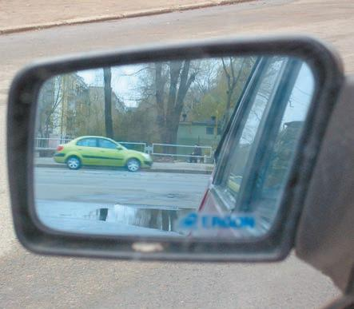
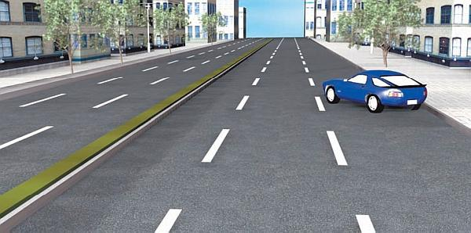
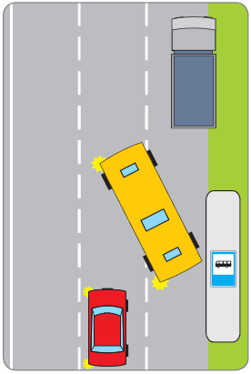

Как правильно тронуться с места и начать движение.
Почему же человек, успешно сдавший экзамен в ГИБДД, получивший права и севший после этого за руль своего автомобиля, не всегда может с первой попытки тронуться с места? Ведь в автошколе у него это отлично получалось, да и на экзамене проблем не возникло. В чем же дело?
Существует две основные причины такого явления. Одна заключается в том, что человек впервые сел за руль и получил начальные водительские навыки на конкретном учебном автомобиле и на нем же впоследствии сдавал экзамен в ГИБДД. В результате он привык именно к этой машине (к свободному ходу педалей, расположению органов управления, габаритам и т. д.). Поэтому, сев за руль другой, «непривычной» машины, человек вполне может ощущать определенный дискомфорт. Например, если свободный ход педали сцепления будет меньше, чем у учебного автомобиля, вполне вероятно, что отпускать эту педаль с той же интенсивностью не стоит, иначе машина просто заглохнет (что, собственно, и происходит). То же самое с педалью газа: возможно, что на вашей машине ее нажимать нужно не так сильно, как на учебной (или наоборот).
Вторая причина носит психологический характер. В автошколе человек привык, что рядом сидит опытный инструктор, и само его присутствие вселяет уверенность в силах. Когда же он садится за руль своего автомобиля, инструктора рядом нет (а может, и наоборот – рядом сядет какой-нибудь полный «чайник»), что никак не способствует укреплению уверенности в себе. Поэтому возможно и резкое «бросание» педали сцепления, и недостаточное нажатие педали газа, приводящее все к тому же – автомобиль глохнет.
Поэтому еще в процессе обучения в автошколе вы можете периодически садиться за руль своей машины (разумеется, если она у вас есть, и только в присутствии опытного водителя), чтобы почувствовать разницу между вашим и учебным автомобилем. Это позволит впоследствии избежать ненужных ошибок при трогании с места.
Необходимо отметить, что даже более или менее опытный водитель не всегда будет уверенно чувствовать себя за рулем «непривычной» машины, ведь каждый автомобиль имеет свои специфические особенности, к которым нужно привыкнуть. Однако опытный водитель сумеет быстрее приспособиться к другой машине, в то время как новичку для этого потребуется больше времени и попыток.
Кстати, часто новички запускают мотор, едва успев занять свое место. Это серьезная ошибка, которая может привести к тому, что, во-первых, вы очень быстро устанете (начнет ломить спину и т. п.), а во-вторых, у вас будет ограничен обзор, поскольку, как вскоре выяснится, зеркала заднего вида не отрегулированы и в них ничего не видно. Все это происходит потому, что вы не заняли удобную позу и не отрегулировали водительское место так, чтобы вам было удобно управлять автомобилем. Еще одна распространенная ошибка – машина стоит на включенной передаче с опущенным «ручником» (то есть стояночный тормоз не работает). Поэтому, перед тем как завести мотор, убедитесь в том, что рычаг переключения передач стоит в нейтральном положении, иначе сразу после включения стартера автомобиль может резко дернуться вперед, ударившись о какое-либо препятствие (машина, стоящая впереди, столб, стена гаража, пешеход и т. д.).
Итак, учитывая изложенное вам нужно: сев на водительское сиденье, принять удобную позу и отрегулировать место применительно к себе (подать кресло вперед или назад, поднять или опустить спинку). Обязательно удостоверьтесь в том, что положение зеркал заднего вида гарантирует максимальный обзор (рис. 1.1).

Рис. 1.1. Зеркала заднего вида должны обеспечивать максимальный обзор
После этого необходимо проверить, не опущен ли «ручник». Если опущен, поднимите его, включив стояночный тормоз. Благодаря этому машина останется на месте даже в том случае, если вы утратите над ней контроль (запуск мотора при включенной передаче, самопроизвольное начало движения на склоне и т. п.).
Далее удостоверьтесь в том, что рычаг переключения передач стоит в нейтральном положении. Если все в порядке – включайте зажигание и, убедившись, что все приборы работают нормально (для этого обратите внимание на индикаторы приборной панели), включайте стартер и заводите мотор.
При запуске мотора в морозную погоду рекомендуется перед включением стартера нажать до упора педаль сцепления. Этот нехитрый способ облегчает запуск двигателя. После того как двигатель заработал, еще раз убедитесь в том, что рычаг переключения передач стоит в нейтральном положении, и плавно отпустите педаль сцепления.
Теперь ваш автомобиль готов к началу движения. Но учтите, что мотор должен предварительно прогреться в течение нескольких минут, если до этого более двух часов он не работал. Как известно, рабочая температура охлаждающей жидкости 90 °С, но трогаться с места допускается уже после того, как двигатель прогреется примерно до 50–60 °С. Это в первую очередь относится к карбюраторным машинам (хотя такие автомобили – это уже «вчерашний день»): холодный двигатель работает нестабильно, постоянно «чихает», машина «дергается», не может набрать полную мощность и т. п.
Перед тем как начать движение, обязательно внимательно посмотрите вперед, по бокам и назад, причем не только через зеркала заднего вида, но и оглянувшись. Это необходимо для того, чтобы удостовериться в отсутствии помех для движения (автомобилей, пешеходов, животных и др.).
Затем включите указатель левого поворота – тем самым вы дадите знать другим участникам дорожного движения о своем намерении начать движение (рис. 1.2).

Рис. 1.2. Начинайте движение только по своей полосе, не заезжая на соседнюю
После этого полностью (до упора) выжмите педаль сцепления и переместите рычаг переключения передач в положение, соответствующее первой передаче (именно с этой передачи следует трогаться с места). Не отпуская педаль сцепления, снимите автомобиль со стояночного тормоза (то есть опустите «ручник») и правую руку положите на рулевое колесо.
Затем опять удостоверьтесь в отсутствии помех для начала движения. Помните, что водитель транспортного средства перед началом движения должен уступить дорогу транспортным средствам, движущимся в попутном направлении (рис. 1.3).

Рис. 1.3. Опасная ситуация: автобус, начиная движение, выехал на соседнюю полосу
В случае если помехи отсутствуют, постепенно и плавно начинайте отпускать педаль сцепления, прислушиваясь к тому, как работает двигатель. Как только вы почувствовали, что частота вращения коленчатого вала начинает снижаться, значит, сцепление постепенно «схватывает». В этот момент нужно ненадолго задержать педаль сцепления в этом положении, одновременно увеличивая подачу топлива (то есть нажимая на педаль газа). В результате автомобиль тронется и начнет движение, а вы должны плавно отпустить сцепление, продолжая увеличивать подачу топлива.
Рассмотрим несколько характерных ошибок, допускаемых начинающими водителями при трогании автомобиля с места.
Многие новички не полностью выжимают педаль сцепления, из-за чего испытывают затруднения при включении первой передачи. Иногда данный процесс сопровождается характерным скрежетом, доносящимся из коробки переключения передач, которая из-за данной ошибки может выйти из строя.
Еще одна ошибка – слишком раннее или слишком позднее увеличение подачи топлива (то есть усиление давления на педаль газа). В первом случае это приводит к тому, что двигатель «ревет» и машина не едет, поскольку сцепление еще не отпущено настолько, чтобы «схватывать». Во втором случае автомобиль просто глохнет, иногда совершив при этом характерный рывок вперед (данная ошибка может стать причиной поломки сцепления). Помните: очень важно уметь правильно определить момент увеличения подачи топлива – он наступает тогда, когда после плавного и мягкого отпускания педали сцепления двигатель начинает терять обороты, что свидетельствует о «схватывании» сцепления.
Следующая ошибка – это резкое бросание педали сцепления после увеличения подачи топлива. Человек, в общем-то, правильно определяет момент, когда нужно увеличить подачу топлива, но вместо того чтобы продолжать плавно отпускать педаль сцепления, бросает ее резко, в результате чего машина дергается и глохнет (это тоже приводит к преждевременному выходу сцепления из строя).
Еще одной известной ошибкой является резкое увеличение подачи топлива, из-за чего автомобиль начинает движение не плавно, а резко срывается с места, иногда даже с пробуксовкой колес. Это очень опасно, поскольку для начинающего водителя такая ситуация является полной неожиданностью и он не способен быстро и адекватно на нее отреагировать.
И еще одна распространенная ошибка новичков заключается в том, что, трогаясь с места, человек смотрит не на дорогу, а на органы управления автомобилем (руль, педали, панель приборов) или на капот. Отметим, что эта ошибка встречается не только при трогании, но и в процессе движения.
На первый взгляд может показаться, что процесс начала движения прост, однако в реальности он вызывает затруднение у всех без исключения новичков. Трудно найти водителя, у которого бы во время обучения не глох или не дергался автомобиль. Правда, это относится только к тем, кто учится водить на автомобиле с механической коробкой переключения передач. Что касается «автоматов», то у них данный процесс предельно упрощен: для того чтобы начать движение достаточно перевести рычаг коробки передач в любое положение, которое означает «движение» (как правило, это положение D), и плавно увеличивать подачу топлива.